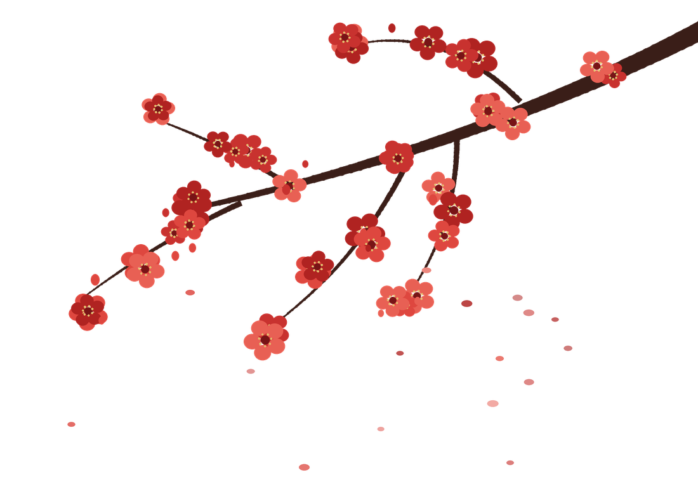
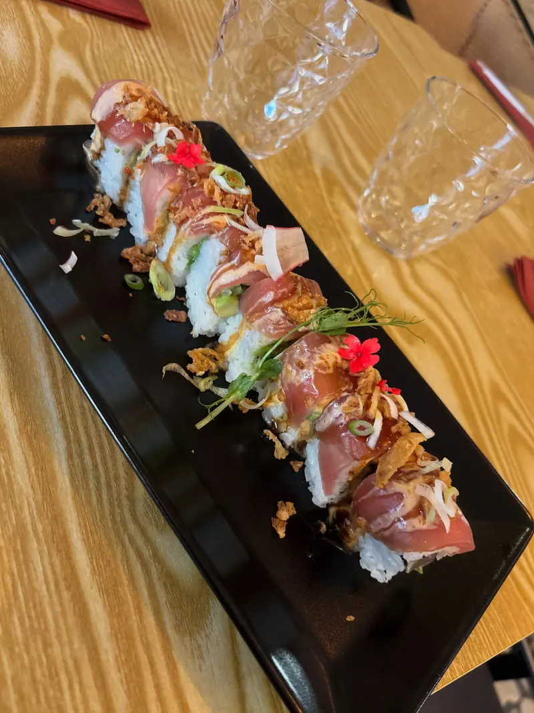
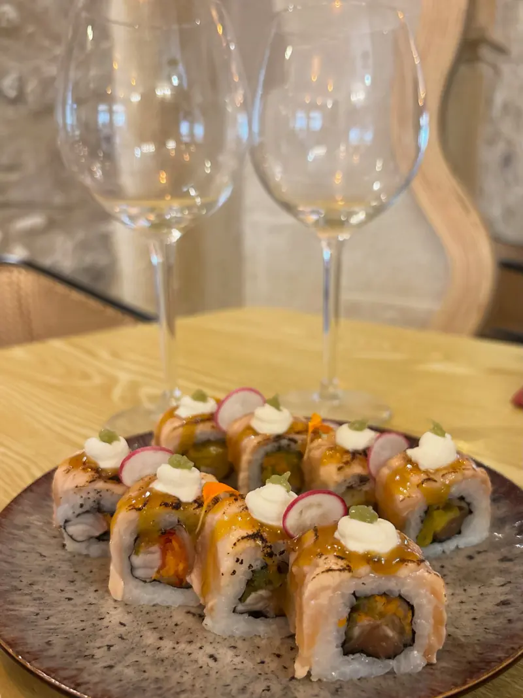
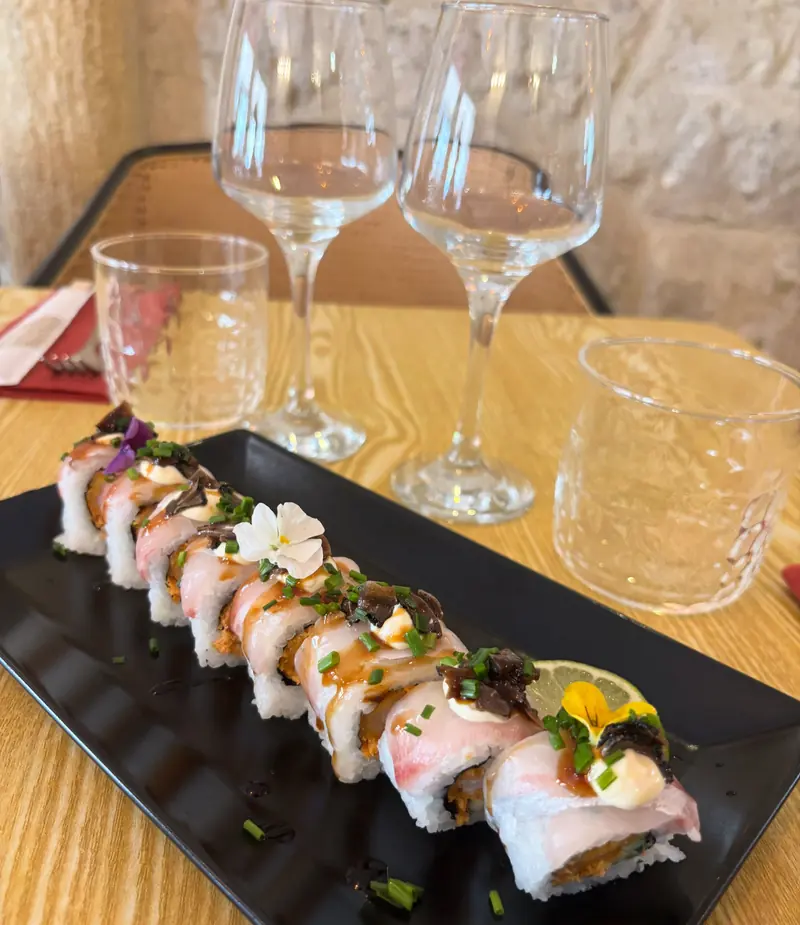
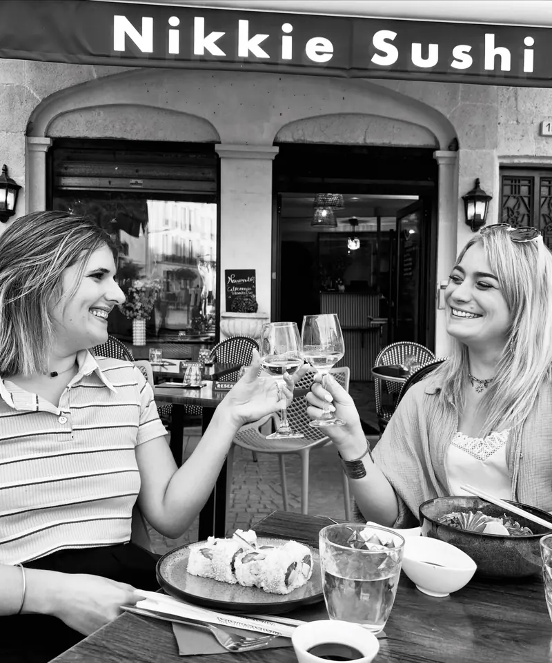

Nikkie Truffe
8 piècesEbi fry, daurade, concombre, carotte, carpaccio de truffe d’été, mayonnaise, ciboulette
16 €

Place de la Madeleine · Béziers
Le Japon rencontre le Pérou. Sushis, ceviches et tacos nikkei préparés à la minute, à déguster sur la place, à emporter ou livrés chez vous.
12h – 14h30 · 18h45 – 22h · fermé le mercredi

Les incontournables
Ebi fry, daurade, concombre, carotte, carpaccio de truffe d’été, mayonnaise, ciboulette

Thon, avocat, concombre, oignons frits, oignons nouveaux

Saumon, saumon snacké, pickles de légumes, cream cheese, wasabi mariné, graines de sésame

Saumon, pousses de moutarde, épices japonaises

Saumon, thon, daurade
6 maki avocat cheese, 8 Nikkie Pink, 8 Samba Exotic, 8 Samba Tuna Peruano, 8 Samba Rocoto, 2 sushi saumon nikkei, 2 sushi thon nikkei

Cuisine nikkei
À la fin du XIXe siècle, des Japonais partent travailler au Pérou. Loin de chez eux, ils cuisinent avec ce qu’ils trouvent : le piment péruvien remplace le wasabi, le citron vert relève le poisson cru. Les Péruviens les appellent les Nikkei, et leur cuisine devient l’une des plus inventives au monde.
Rokib et Laura ont ouvert Nikkie Sushi en mai 2026, la première adresse nikkei de Béziers. Lui en cuisine, elle en salle, tous deux formés au lycée hôtelier Jean-Moulin. Le principe : des recettes traditionnelles, une touche personnelle, et tout préparé à la minute.
Le restaurantIls en parlent
« Des assiettes généreuses, pleines de goût, avec des produits de qualité et une vraie attention aux détails. On sent la passion en cuisine. »
« Un accueil très chaleureux de Laura et une cuisine raffinée, avec un mélange de saveurs exceptionnel préparé avec soin. »
« Déjà trois fois. Très bon rapport qualité-prix. Les commandes sont préparées sur le moment, ce qui garantit la fraîcheur. »

Horaires & accès
12h – 14h30 · 18h45 – 22h · fermé le mercredi
| Lundi | 12h – 14h30 · 18h45 – 22h |
|---|---|
| Mardi | 12h – 14h30 · 18h45 – 22h |
| Mercredi | Fermé |
| Jeudi | 12h – 14h30 · 18h45 – 22h |
| Vendredi | 12h – 14h30 · 18h45 – 22h |
| Samedi | 12h – 14h30 · 18h45 – 22h |
| Dimanche | 12h – 14h30 · 18h45 – 22h |
1 bis rue Porte Olivier, place de la Madeleine
34500 Béziers
Questions
Une cuisine née au Pérou à la fin du XIXe siècle, quand des Japonais émigrés ont adapté leurs recettes aux produits locaux : piment péruvien à la place du wasabi, citron vert, mangue, maïs. On la retrouve dans nos sushis nikkei, nos ceviches et nos tacos.
Oui, à Béziers, pendant nos services du midi et du soir (sauf le lundi et le dimanche midi), à partir de 20 € de commande. Commandez en ligne, choisissez votre heure, et nous vous livrons.
En ligne par carte bancaire au moment de commander, sur une page de paiement sécurisée. Votre commande part en cuisine dès que le paiement est validé.
C’est conseillé : la salle compte douze couverts, plus la terrasse sur la place de la Madeleine. Les réservations se font par téléphone au 07 50 65 01 24.
Oui : Veggie Box, poke veggie, california veggie, spring rolls veggie, maki avocat cheese, gyoza veggie, guacamole et edamame.
La liste des allergènes de chaque plat est disponible au restaurant et par téléphone. N’hésitez pas à préciser une allergie dans le commentaire de votre commande.
Commandez en ligne en deux minutes : livré à Béziers ou prêt à emporter, à l’heure que vous choisissez.